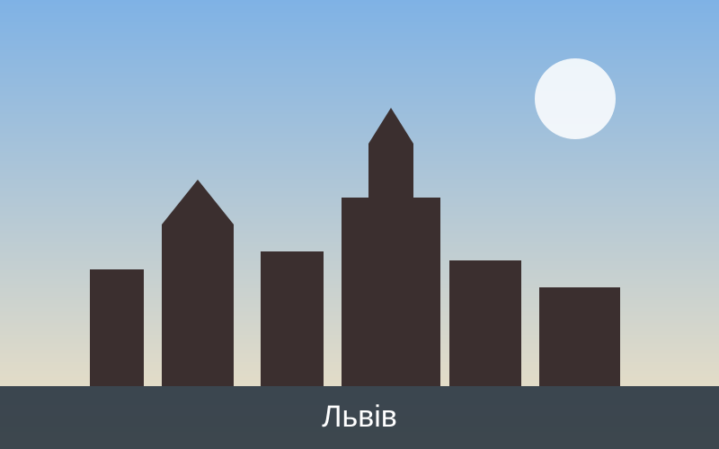

Особисті історії
Найтепліший спогад — несподіваний концерт просто неба на площі Ринок. Незнайомі люди підспівували, і ми почувалися однією великою родиною.
Першого разу я приїхав до Львова пізно ввечері, і бруківка після дощу відсвічувала ліхтарями — відтоді я постійно хочу повернутися.

Площа Ринок із ратушею, Високий замок, Оперний театр та Личаківський цвинтар — місто, де кожен двір має власну історію.
Львівська кава, сирник, пампухи та шоколад ручної роботи. Ранок тут починається у кав'ярні, а закінчується на дахах із видом на місто.
Місто лицарів і легенд, фестивалів та вуличної музики. Кожної осені тут проходить «Книжковий форум», а кав'ярні перетворюються на галереї.
Найтепліший спогад — несподіваний концерт просто неба на площі Ринок. Незнайомі люди підспівували, і ми почувалися однією великою родиною.